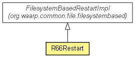

org.waarp.openr66.context.filesystem
Class R66Restart
java.lang.Object
 org.waarp.common.file.Restart
org.waarp.common.file.filesystembased.FilesystemBasedRestartImpl
org.waarp.openr66.context.filesystem.R66Restart
org.waarp.common.file.Restart
org.waarp.common.file.filesystembased.FilesystemBasedRestartImpl
org.waarp.openr66.context.filesystem.R66Restart
public class R66Restart
- extends org.waarp.common.file.filesystembased.FilesystemBasedRestartImpl

Restart implementation
- Author:
- frederic bregier
| Fields inherited from class org.waarp.common.file.filesystembased.FilesystemBasedRestartImpl |
limit, position |
| Methods inherited from class org.waarp.common.file.filesystembased.FilesystemBasedRestartImpl |
getMaxSize, getPosition, setSet |
| Methods inherited from class org.waarp.common.file.Restart |
getSession, isSet |
| Methods inherited from class java.lang.Object |
clone, equals, finalize, getClass, hashCode, notify, notifyAll, toString, wait, wait, wait |
R66Restart
public R66Restart(R66Session session)
- Parameters:
session -
restartMarker
public boolean restartMarker(String marker)
throws org.waarp.common.command.exception.CommandAbstractException
- Specified by:
restartMarker in class org.waarp.common.file.Restart
- Throws:
org.waarp.common.command.exception.CommandAbstractException
restartMarker
public boolean restartMarker(long newposition)
- Same as restartMarker with String
- Parameters:
newposition -
- Returns:
- True if OK
Copyright © 2009-2013 Waarp. All Rights Reserved.